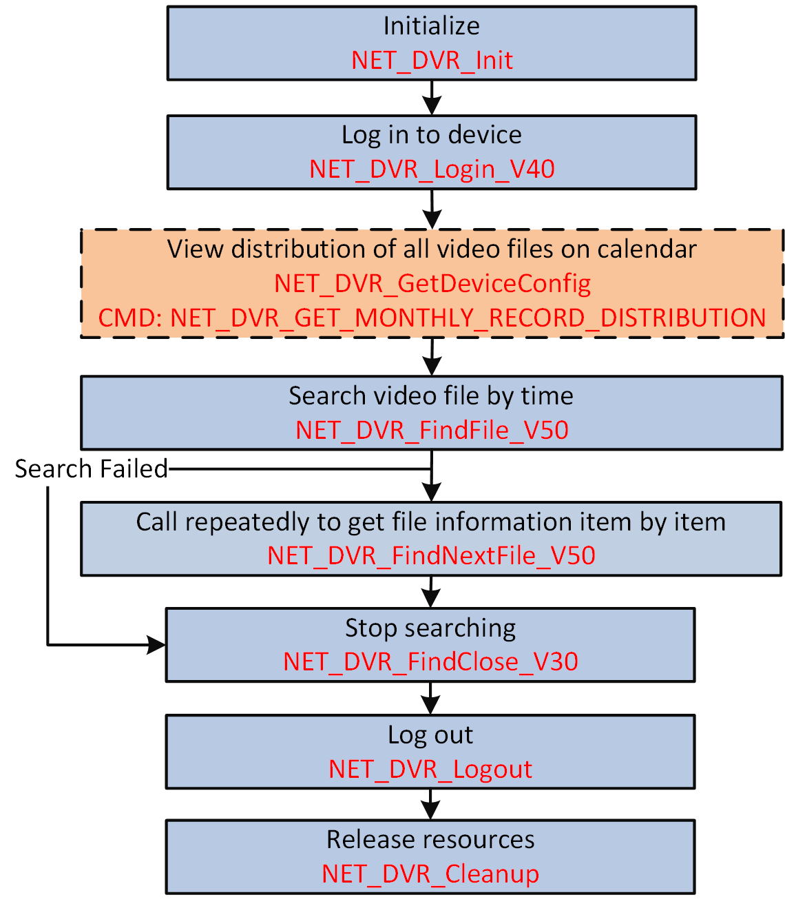

You can set time and select the recording type configured in recording schedule to search the video files by time or by type. You can also call an API to view the distribution of all video files on the calendar to narrow the search range before searching by time.
Make sure you have called NET_DVR_Init to initialize the development environment.
Make sure you have called NET_DVR_Login_V40 to log in to the device.

Figure 1 Programming Flow of Searching Video Files by Time#include <stdio.h>
#include <iostream>
#include "Windows.h"
#include "HCNetSDK.h"
using namespace std;
void main() {
//---------------------------------------
// Initialize
NET_DVR_Init();
//Set connection time and reconnection time
NET_DVR_SetConnectTime(2000, 1);
NET_DVR_SetReconnect(10000, true);
//---------------------------------------
// Log in to device
LONG lUserID;
//Login parameters, including device IP address, user name, password, and so on.
NET_DVR_USER_LOGIN_INFO struLoginInfo = {0};
struLoginInfo.bUseAsynLogin = 0; //Synchronous login mode
strcpy(struLoginInfo.sDeviceAddress, "192.0.0.64"); //IP address
struLoginInfo.wPort = 8000; //Service port
strcpy(struLoginInfo.sUserName, "admin"); //User name
strcpy(struLoginInfo.sPassword, "abcd1234"); //Password
//Device information, output parameters
NET_DVR_DEVICEINFO_V40 struDeviceInfoV40 = {0};
lUserID = NET_DVR_Login_V40(&struLoginInfo, &struDeviceInfoV40);
if (lUserID < 0)
{
printf("Login failed, error code: %d\n", NET_DVR_GetLastError());
NET_DVR_Cleanup();
return;
}
NET_DVR_FILECOND_V40 struFileCond={0};
struFileCond.dwFileType = 0xFF;
struFileCond.lChannel = 1;
struFileCond.dwIsLocked = 0xFF;
struFileCond.dwUseCardNo = 0;
struFileCond.struStartTime.dwYear = 2011;
struFileCond.struStartTime.dwMonth = 3;
struFileCond.struStartTime.dwDay = 1;
struFileCond.struStartTime.dwHour = 10;
struFileCond.struStartTime.dwMinute = 6;
struFileCond.struStartTime.dwSecond =50;
struFileCond.struStopTime.dwYear = 2011;
struFileCond.struStopTime.dwMonth = 3;
struFileCond.struStopTime.dwDay = 1;
struFileCond.struStopTime.dwHour = 11;
struFileCond.struStopTime.dwMinute = 7;
struFileCond.struStopTime.dwSecond = 0;
//---------------------------------------
//Search video files
int lFindHandle = NET_DVR_FindFile_V40(lUserID, &struFileCond);
if(lFindHandle < 0)
{
printf("find file fail,last error %d\n",NET_DVR_GetLastError());
return;
}
NET_DVR_FINDDATA_V40 struFileData;
while(true)
{
int result = NET_DVR_FindNextFile_V40(lFindHandle, &struFileData);
if(result == NET_DVR_ISFINDING)
{
continue;
}
else if(result == NET_DVR_FILE_SUCCESS)
{
char strFileName[256] = {0};
sprintf(strFileName, "./%s", struFileData.sFileName);
saveRecordFile(lUserID, struFileData.sFileName, strFileName);
break;
}
else if(result == NET_DVR_FILE_NOFIND || result == NET_DVR_NOMOREFILE)
{
break;
}
else
{
printf("find file fail for illegal get file state");
break;
}
}
//Stop searching
if(lFindHandle >= 0)
{
NET_DVR_FindClose_V30(lFindHandle);
}
//Log out
NET_DVR_Logout(lUserID);
//Release SDK resources
NET_DVR_Cleanup();
return;
}
Call NET_DVR_Logout and NET_DVR_Cleanup to log out and release resources.